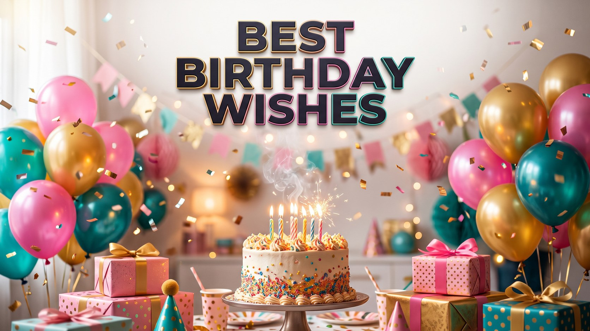

Nikah Mubarak Wishes & Duas for the New Couple
Published October 10, 2026 · Updated October 10, 2026 · By EventBuzz Team

The Nikah is one of the most beautiful moments in a family's life — two people, two families, and a bond made sacred with prayer. When someone you love signs that contract, the right words carry weight: a sincere dua, a warm congratulations, a wish spoken from the heart. Every greeting below was written fresh for EventBuzz in a respectful tone, so you can congratulate a son or daughter, a sibling, or a dear friend with confidence. For the wider celebration, our wedding wishes and messages hub has greetings for every relationship.
What Does "Nikah Mubarak" Mean?
The Nikah is the Islamic marriage contract, signed in the presence of witnesses, through which a couple begins their life together in a way that is honoured in faith. "Mubarak" means blessed, so "Nikah Mubarak" is both a congratulations and a prayer in two words: may this marriage be blessed. You can say it at the ceremony, write it in a card, or send it the moment you hear the news. It is always appropriate, always warm, and always welcome.
The Famous Dua for a New Couple
For generations, this is the dua that has been spoken over newly married couples, and it remains the most treasured Nikah greeting of all:
Baarakallahu lakuma wa baaraka alaykuma wa jama'a baynakuma fi khayr.
"May Allah bless you both, and shower His blessings upon you, and unite you both in goodness."
Use it exactly as it is, in a card, a message or spoken aloud with a hug. Few gifts outlast a sincere dua, and this one asks for the three things every marriage needs: blessing on each person, blessing on the home they build, and goodness in everything they face together.
Nikah Mubarak Wishes for a Son or Daughter
From a parent's heart — pride, gratitude and a lifetime of duas in a few lines.
- Nikah Mubarak, my dearest child. Today I watched my dua of twenty years stand up and say "I do." May Allah fill your marriage with the same joy you have always brought to our home.
- To my son: may you be a husband of kindness and patience, and may your home be a place of peace. Nikah Mubarak — your mother and father could not be prouder.
- To my daughter: we raised you with prayers on our lips, and today we hand our most precious trust to a new home. May Allah bless your marriage with love that deepens every single year.
- Nikah Mubarak! May your marriage be written among the most blessed, and may your children one day say their own Nikahs with hearts as full as ours today.
- My child, marriage is half of faith and all of my prayers are with you. May Allah grant you both sakeenah — a deep, calm tranquillity — in every season of life.
Nikah Mubarak Wishes for a Sibling
For the brother or sister whose big day finally arrived.
- Nikah Mubarak to my favourite sibling! May Allah bless your union and make your spouse the coolness of your eyes, today and always.
- From sharing a bedroom to watching you sign your Nikah — what a journey. May your marriage be as loyal and loud with laughter as our childhood was.
- Dear brother, Nikah Mubarak. May you lead your home with gentleness, and may your wife always find kindness in your words.
- Dear sister, Nikah Mubarak. May your new home overflow with the warmth you carry into every room, and may your husband treasure you as we always have.
- Nikah Mubarak! Two families became one today, and I gained a wonderful new sibling. May Allah unite your hearts in goodness forever.
Nikah Mubarak Wishes for a Friend
Warm congratulations for the friend whose happiness feels like your own.
- Nikah Mubarak, my friend! I have prayed for this day alongside you, and seeing it arrive fills my heart. May Allah bless your marriage abundantly.
- To my dear friend on your Nikah: may your spouse be your comfort in hardship, your partner in joy, and your companion towards every good thing.
- Nikah Mubarak! May your home be filled with barakah, your table with guests, and your years with reasons to smile at each other.
- Congratulations on completing half your deen, my friend. May the other half be made easy and beautiful for you both.
- Nikah Mubarak to a couple whose love is matched only by their kindness. May Allah protect your bond from every harm and grow it in every season.
Short Nikah Mubarak Messages for WhatsApp
Graceful one-liners for the moment the news arrives.
- Nikah Mubarak! Baarakallahu lakuma — may Allah bless you both and unite you in khayr. 🤲
- Nikah Mubarak to the beautiful couple. May your marriage be full of love, mercy and barakah.
- Heartfelt Nikah Mubarak! May Allah make your spouse the coolness of your eyes.
- Nikah Mubarak! Wishing you a lifetime of sakeenah, mawaddah and rahmah together.
- So happy for you both — Nikah Mubarak! May every year be sweeter than the last.
- Nikah Mubarak, dear. Duas for a blessed home, righteous children and endless gratitude.
Frequently Asked Questions
What do you say when someone has their Nikah?
"Nikah Mubarak" is the classic greeting. To make it fuller, add the famous dua: "Baarakallahu lakuma wa baaraka alaykuma wa jama'a baynakuma fi khayr" — may Allah bless you both and unite you in goodness.
Is "Nikah Mubarak" the same as "Shaadi Mubarak"?
They are close cousins. "Nikah Mubarak" blesses the religious marriage contract itself, while "Shaadi Mubarak" congratulates the wedding celebrations more broadly. Both are warm and appropriate around the wedding days.
Can non-Muslims say Nikah Mubarak?
Yes, absolutely. It is a kind and respectful greeting that Muslim families deeply appreciate from any well-wisher. It simply means "blessed marriage," and it is welcome from friends of every faith.
What gift goes well with a Nikah Mubarak card?
A handwritten card with the famous dua is treasured on its own. Thoughtful additions include dates, a beautiful prayer mat, a framed piece of calligraphy, or a contribution towards the couple's new home.
Can I copy these wishes for my message or card?
Yes. Every wish here is original to EventBuzz and free for personal use. The famous dua itself is a beloved traditional prayer, shared here with transliteration and translation for everyone.
Conclusion
A Nikah is a beginning written with prayer, and your words become part of its first page. Choose the wish that sounds like your heart, add the couple's names, and let your dua travel with them into their new life. For Eid greetings to share with the whole family later, see our Eid Mubarak wishes, and for the engagement that comes before the Nikah, our engagement wishes collection is ready.
Nikah Mubarak to every new couple — may your union be blessed in this world and the next.